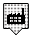

- PAPETERIE
- CHIMIE 
- CIMENTERIE
- CHAUFFERIE
Sélection des polluants
- Sans polluant
- NO₂ - Dioxyde d'azote
- COVNM - Composés organiques volatils
- CO - Monoxydes de carbone
- SO₂ - Oxydes de souffre

AIDE
La taille des cercles de polluants indique la quantité de polluants émises par an. Elle ne désigne pas la zone géographique impactée par ses polluants.
Source iREP
Pont-de-Claix : l’axe chimique
Le Registre français des émissions polluantes (iREP) permet d’identifier les industries de l’agglomération grenobloise et l’évolution de leur impact sur l’environnement. Nous avons sélectionné les principaux polluants pris en compte dans l’indice atmosphérique puis localisé et catégorisé les usines qui en sont à l'origine. Depuis une dizaine d’années, les émissions de dioxyde de souffre, un gaz irritant produit par les industries chimiques, ont fortement diminué. Par ailleurs, des actions sont menées avec les chaufferies de Grenoble pour diminuer leurs émissions d’oxydes d’azote. Enfin, le nouveau Plan de protection de l’atmosphère prévoit de réduire les émissions de particules fines dans le secteur des carrières, ici non renseignées.